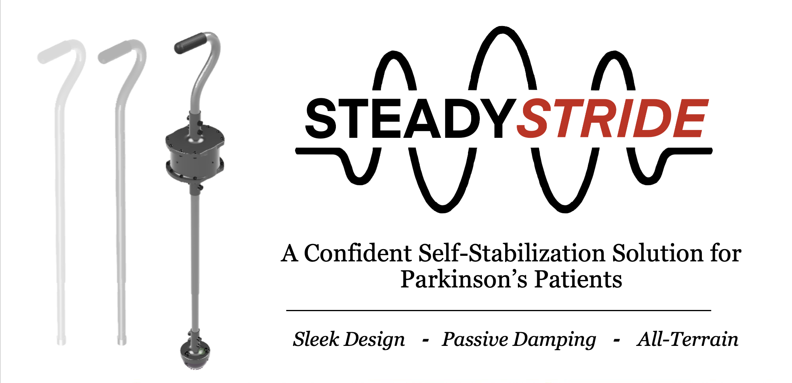

SteadyStride: Self-Stabilizing Cane for Parkinson's Disease
A sleek, fully mechanical cane with a tuned-mass damper and an all-terrain base that reduces tremor propagation and improves stability during everyday walking.

Summary
SteadyStride is a self-stabilizing cane that integrates a lateral tuned-mass damper (TMD) into the handle and pairs it with a grippy, treaded base. The TMD oscillates out of phase with tremor inputs, passively restoring the cane toward center, while the base increases traction on common surfaces. The design is fully mechanical—no batteries, no charging—so it stays light, discreet, and reliable.
Problem & Approach
People with Parkinson's Disease frequently face freezing of gait, tremor propagation through assistive devices, and balance challenges that limit independence. Traditional canes offer support but do not actively reduce tremor transmission or help re-center posture during stance.
- Design goals: reduce tremor transmission; maintain or improve stability while walking/turning; keep the device discreet and intuitive; work across common indoor/outdoor surfaces; achieve low-cost, manufacturable design.
- Need-finding: interviews emphasized fear of public mobility and the desire to "keep walking" with dignity.
- Method: benchtop torque-angle characterization guided mass–spring tuning; IRB-approved pilot testing on straight walking, left/right turns, sit-to-stand, and stairs.

Mechanism (How it works)

Tuned-Mass Damper (TMD) in the handle: a laterally tuned mass–spring system oscillates when tremor input is applied. Because of phase lag and inertia, its motion counteracts the input and reduces the cane's angular displacement. Mass and stiffness are swappable to tailor the response to user needs. Mechanical stops limit travel for safety.
Stabilizing base: a flexible, non-slip tread increases surface grip and helps maintain stability during directional changes and turning, especially on smooth floors and typical outdoor paths.
Testing & Results
IRB Pilot (SUNY Cortland Biomechanics Lab)
Motions tested: no-motion baseline, straight walking, left/right turns, sit-to-stand, stairs.
- Qualitative comfort/setup feedback recorded with participant consent.
- Benchtop testing included torque–angle characterization across prototypes.
Outcome
Up to 12.25% maximum decrease in tremor propagation in the x-direction with SteadyStride vs. a standard cane (subset of viable participants).
A simple dynamic model \( \gamma = f(m, k) \) guided TMD tuning.
Gallery


Project Files
Files may take a few seconds to load due to size.